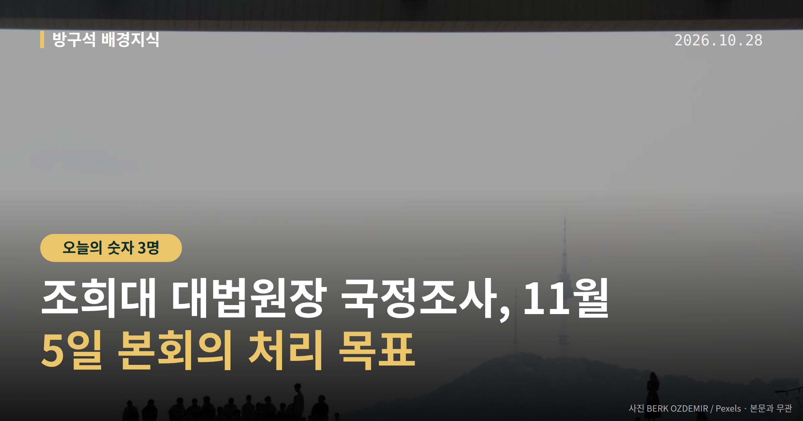
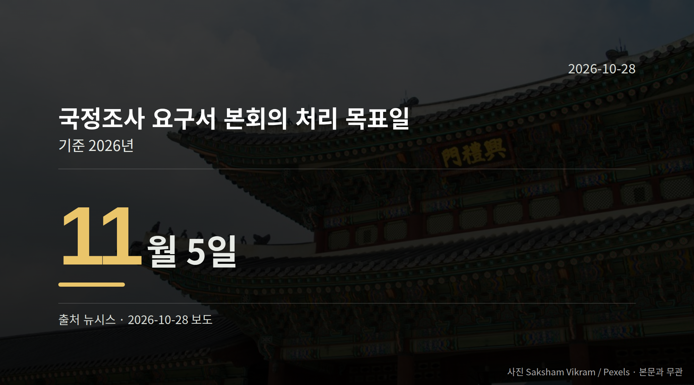

이 글은 2026년 10월 28일 기준으로 정리한 내용입니다.
더불어민주당이 10월 27일 의원총회에서 조희대 대법원장 국정조사를 실시하기로 결정했습니다. 처리 목표일은 11월 5일 본회의입니다.
국민의힘은 "모든 수단을 총동원해 저지하겠다"고 밝혔습니다. 당장 다음 분기점은 11월 5일 본회의입니다.
국정조사는 국회가 특정 사안을 정해 자료를 받고 증인을 불러 따져 보는 절차입니다. 민주당은 10월 27일 의원총회에서 이 절차를 밟기로 의견을 모았습니다.
거론된 대상은 '대법관 후보자 재제청 거부'와 '업무추진비 부당 집행' 의혹 등입니다. 모두 의혹 제기 단계이며, 조희대 대법원장 본인의 해명은 확인되지 않았습니다.
동아일보 보도에 따르면 계엄 당시 회의도 조사 대상으로 거론됐고, 대법원장 휴대전화 교체 내역 조회를 둘러싼 논란도 제기됐습니다. 다만 세부 경위는 확인되지 않았습니다.
| 발언 주체 | 발언 요지 |
|---|---|
| 민주당 한병도 원내대표 | "제기된 의혹을 철저히 규명하고 국민적 의구심을 해소하는 것은 국회가 마땅히 할 책무" |
| 민주당 전은수 원내대변인 | 요구서를 11월 5일 본회의에서 처리하는 것이 목표 |
| 국민의힘 장동혁 대표 | "국정조사는 탄핵으로 가기 위한 전 단계" |
| 국민의힘 정점식 원내대표 | "이 국정조사야말로 이재명 대통령과 민주당의 탄핵 사유" |
정점식 원내대표는 이 국정조사가 "위헌"이며 "사법부를 노예화하려는 시도"라고 주장했습니다. 또 조 대법원장이 오세훈 서울시장에게 무죄를 선고한 적이 없다고 반문하며 관련 재판 재개를 촉구했습니다.
한편 조국혁신당 등 범여권 일각의 탄핵 주장에 대해 한병도 원내대표는 "우리는 우리 판단을 할 것"이라고 선을 그었습니다. 국민의힘 측 "탄핵 사유" 주장에 대한 민주당의 직접 반박은 자료에 담겨 있지 않습니다.

국민의힘은 "국정조사 계획안(요구서)은 필리버스터가 불가능하다"며 의원총회를 열어 원내 대응 방안을 논의할 계획이라고 밝혔습니다. 필리버스터는 표결을 늦추기 위해 발언을 길게 이어 가는 무제한 토론을 뜻합니다.
국정조사특위 구성 같은 세부 절차는 아직 여야 협의가 시작되지 않았습니다. 요구서가 본회의에서 어떻게 처리되는지, 예고된 저지가 어떤 형태로 나타나는지가 다음 확인 지점입니다.
국회의원 발의 법률안 177건. 가장 최근은 장애인학대방지 및 피해장애인 권리구제 등에 관한 법률안(서미화의원 등 16인).
본회의 처리 법률안 1건 — 철회 1건
이번 주 등록된 선거 여론조사 9건
열린국회정보·중앙선거여론조사심의위원회 자료를 직접 셌습니다. 여론조사의 자세한 사항은 중앙선거여론조사심의위원회 홈페이지를 참조하세요.
여러분은 국회가 사법부를 상대로 조사에 나설 때, 어디까지가 적정한 범위라고 보시나요?
댓글로 알려 주시면 다음 글에 반영하겠습니다.